Capabilities, delegation, and an afternoon of projects
Benjamin Golub · 5 October 2026
Keep one neglected research task in mind.
This afternoon: attempt it and inspect the result.
1
1b
Theoretical CS
and math
Solves “top 5”-level problems autonomously; a good writeup takes one more day.
Security
Finds and exploits bugs in some of the world’s most carefully secured systems.
Economics journals
Checks every paper at Econometric Society and AEA journals before publication. Often finds significant mistakes.
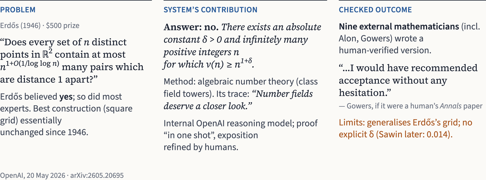
2
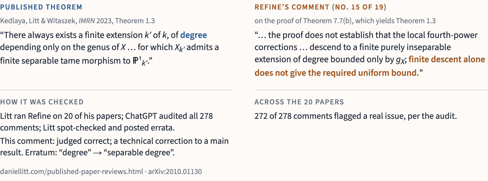
3
Erratum and audit: daniellitt.com/published-paper-reviews.html
The gap between typical use (and free models)
and expert use is enormous.
4
1
The model’s capabilities.
2
Its tools and working context.
3
How you delegate the work.
A decent high-school intern,
versus top-professor-level skill and care,
inexplicably demoted to an RA job.
Some implications of what we discuss today
are disconcerting.
5
They raise difficult questions about the future
of our careers and our economy,
and, for some of us, more existential questions.
5b
·
Infinite programming ability
·
Some difficulties with practical reasoning
·
Limited context on the specifics of your work,
e.g. your research area
“Next-token predictor,” “stochastic parrot”:
outdated cope descriptions that give you
a very wrong idea.
Chat
exchange messages.
Saved agent run, 4 Oct 2026: AJR (2001) Table 4
6
Agent
pursue a task through actions.
Harness
provide tools, context, and execution.
Key principle: tool use
Programming · downloading · search ·
calling other LLMs (“subagents”)
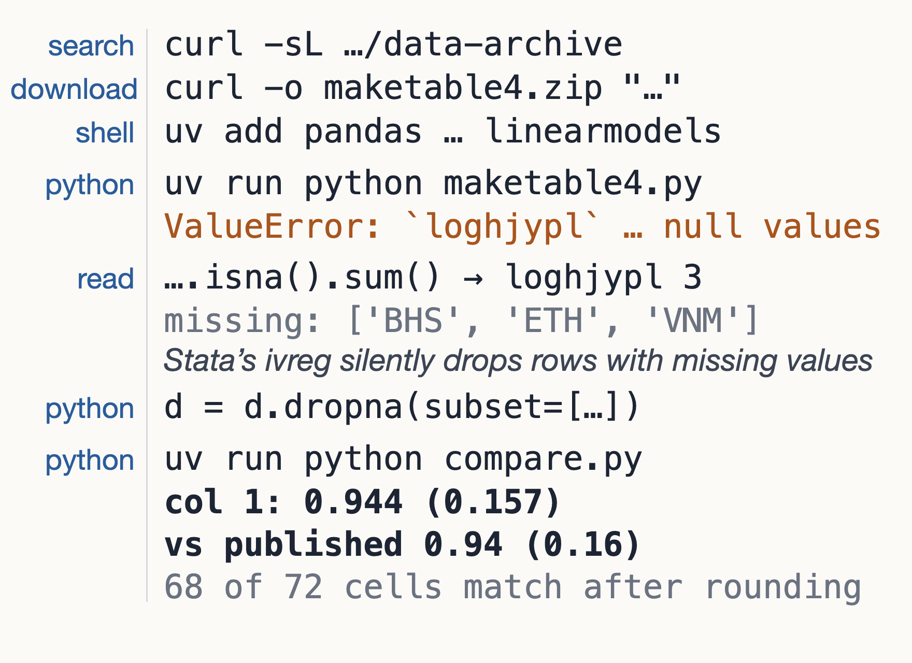
Think of an RA.
7
People with management principles and intuition do this better.
“Ask me the important questions before you start.”
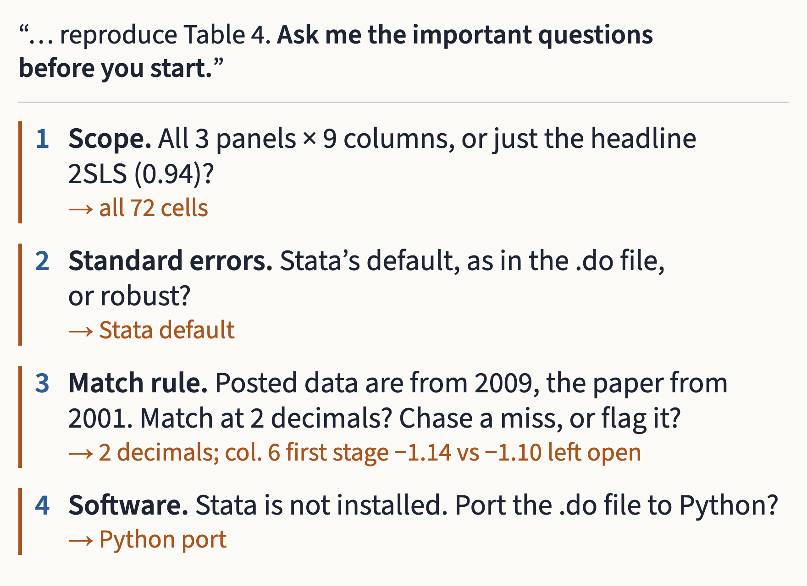
A fresh agent’s questions; orange: earlier run’s choices
It can ask you for
the key context it’s missing.
Skills are files in a shared Dropbox or Drive that codify key workflows and principles.
8
“Save what worked in this replication as a skill: when to use it, what to do, how to check.”
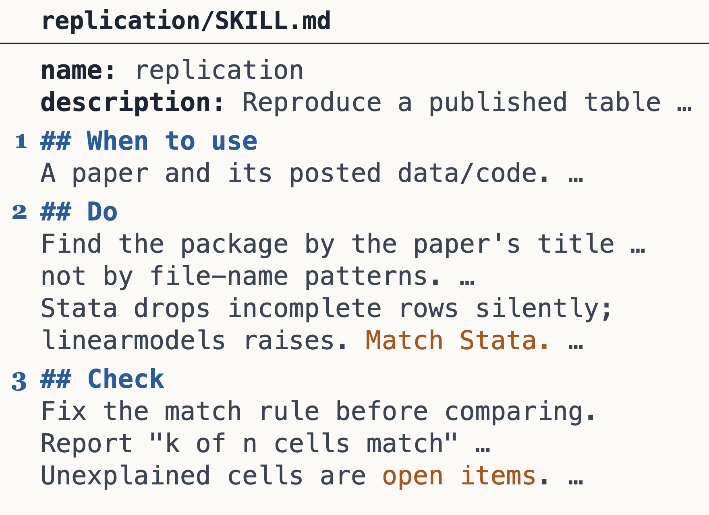
Written from the AJR run’s trace; full skill on the hub
Mathpix
8b
What
Text recognition built for mathematics: PDFs, scans, handwriting to Markdown, with equations in LaTeX, tables intact.
Why
Agents read equations and tables far more reliably from clean Markdown than from a raw PDF.
How
Get an API key at mathpix.com.
Have your agent write the skill;
use it on every paper.
Skill: pdf-to-markdown
When
Any PDF you will read, check or cite.
Do
Send it to the Mathpix API. Save paper.md next to the PDF and work from that.
Check
Compare a few equations and one table against the original.
Important tricks
9
1
Use voice.
2
Have it pose the important clarifying questions in an adaptive sequence, to get the context it’s missing.
3
Learn some software engineering, to know what process you’re managing. Ask it to explain unfamiliar steps.
4
Run several agent sessions at once, when you’re able.
10
Calibrate
Have people and a culture to calibrate against, so you don’t get into AI psychosis.
Be on X
Not doing so is like working in field X but refusing to go to its main conference or seminar.
Mental health
An engineer at an AI company got tired of being the meat puppet, an employee of the AI systems.
This afternoon (the “hackathon”) we work in groups to do some of these things.
11
Question
What do you want to learn or produce?
Inputs
What can you provide?
Check
What would count as progress?
Report
Show the result or explain the obstacle.
Propose your project to a team. Teams pick one;
which one doesn’t really matter. Pitch each other;
if unsure about collective choice, use a randomization device.
Example 1 · Replicate and stress-test · 1/3
“Download the data for Acemoglu,
Johnson & Robinson (2001),
set up a local environment,
and reproduce Table 4.”
One prompt, no follow-ups.
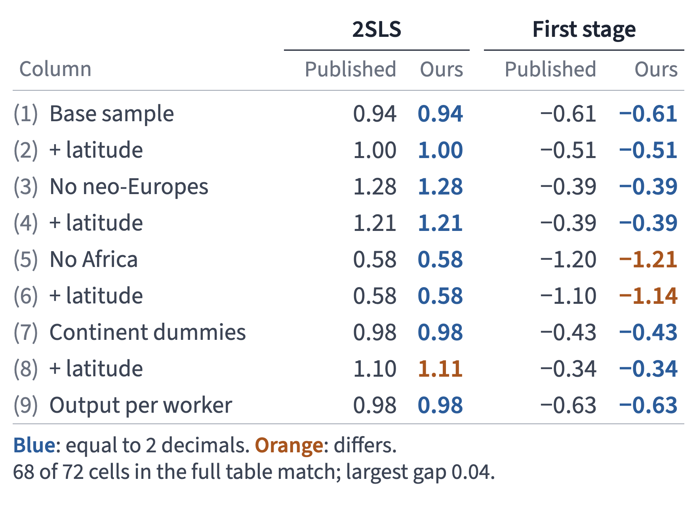
AJR (2001), Table 4, from the authors’ posted data
Example 1 · Replicate and stress-test · 2/3
“Propose five robustness tests
that will probe the message
of AJR (2001).”
Go back and forth with the AI
on the ideas.
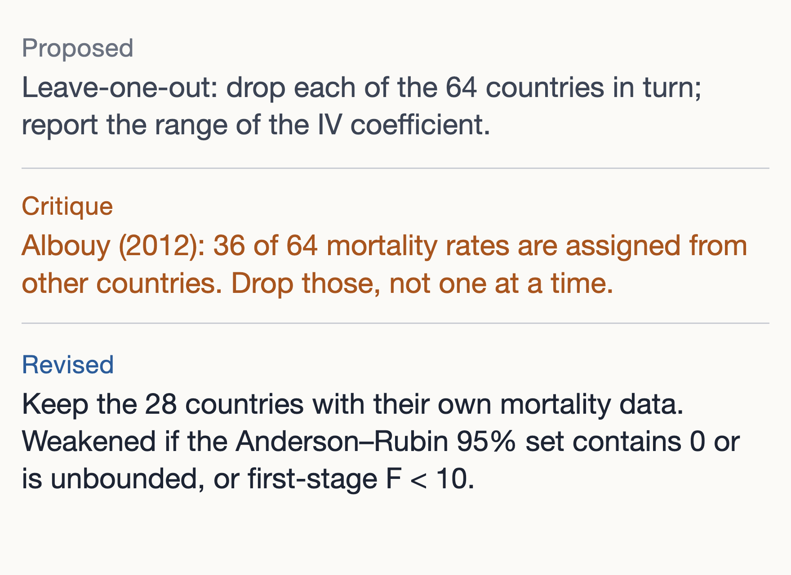
One test, before and after critique
Example 1 · Replicate and stress-test · 3/3
“Run each agreed test
in its own subagent;
save results to files;
summarize against
our decision rules.”
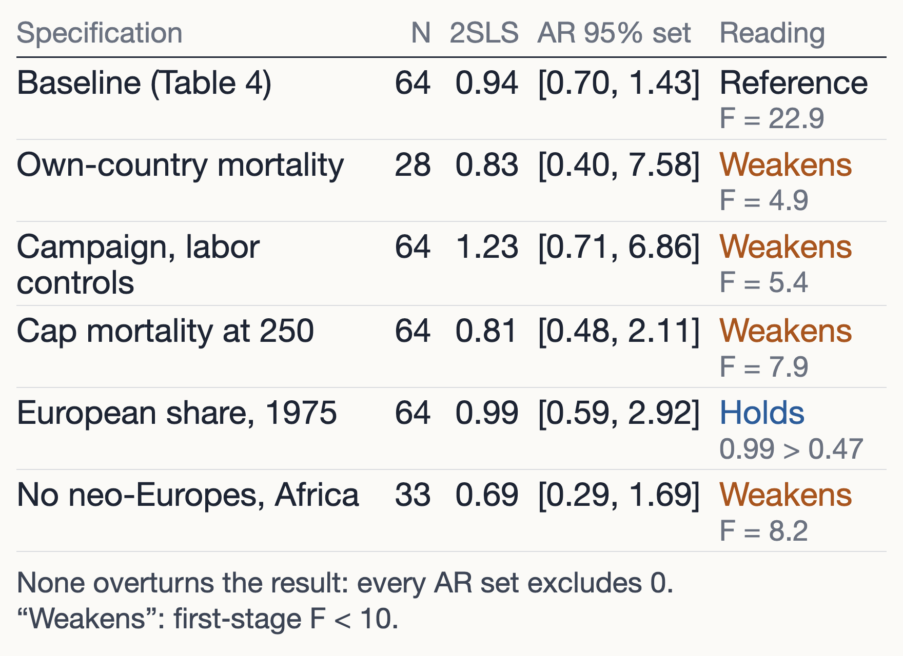
AJR (2001) Table 4, col. 1, and five agreed tests
Then decide which parts
of the paper’s message hold up.
Example 2 · Probe and extend a theory · 1/6
Guan & Yogev, SNARGs for NP (2025)
Gemini → two outside cryptographers
Wrong
SNARGs for all of NP from LWE alone
Fixed
From LWE plus a new commitment scheme, known only from strong assumptions
Tao, Erdős Problem #783 write-up (2026)
GPT-5.2 Thinking → Tao
Wrong
Small primes bounded by an inequality pointing the wrong way
Fixed
Small primes handled by Hildebrand’s inequality for the Dickman function
McSwiggen & Sahi, Macdonald polynomials (2026)
GPT-5.6 Pro → Sra → authors
Wrong
Theorem 2.1 fails on its own point set: 12/7 < 2
Fixed
Point set redefined with the t-exponents reversed; theorem holds
Example 2 · Probe and extend a theory · 2/6
Finkelstein, Notowidigdo, Schilbach & Zhang (QJE 2025), eq. (16): welfare cost of a recession
Wrong
ΔdT ≈ Δ − dT ( VSLYc + 1γ − 1 )
Fixed
ΔdT ≈ Δ − dT · VSLYc
The extra term came from the final simplification step.
The numerical welfare results are unaffected.
Refine flagged it in a related paper; the authors’ corrigendum (March 2026) credits it.
The limit: on Tirole (1985), every model first called a flawed proof correct.
Example 2 · Probe and extend a theory · 3/6
More aggressive: start with a paper you have written.
“List the results Robust Market Interventions relies on. Download each source and check every
hypothesis where we apply it.”
Footnote 19, p. 16
Wrong
Errors are mean-zero, “with variances bounded uniformly.”
Fixed
Errors are mean-zero and “bounded uniformly,” as in Condition 1(b).
Condition 1(b), p. 12
Wrong
Lemma 4 needs the noise matrix E symmetric; the condition never says so.
Fixed
Add: “E symmetric, entries independent on and above the diagonal.”
Example 2 · Probe and extend a theory · 4/6
Davis–Kahan. If the noise is small next to the eigenvalue gap, estimated eigenvectors are close to the true ones.
Paper. Errors are bounded, so the noise grows like √n; the top eigenvalue b grows like n. A footnote restates the assumption as bounded variances.
Agent. Make each error ±n with chance 1/n², else 0. The variance is 1, but one such entry makes the noise at least n, about five times b. This happens in 39–41% of draws, at each n tested, 300 to 30,000.
n = 300 products.
Each error is ±300 with chance 1/300², otherwise 0.
Its variance is 1.
Top eigenvalue b = 60
Noise, bounded errors: about 34
Noise, footnote example: at least 300
in 39% of draws at this n
Fixed. Footnote 19 says “bounded uniformly.”
No result changes.
Example 2 · Probe and extend a theory · 5/6
“In DeGroot learning, make a fraction s of agents stubborn. Simulate and report what changes for the wisdom of crowds.”
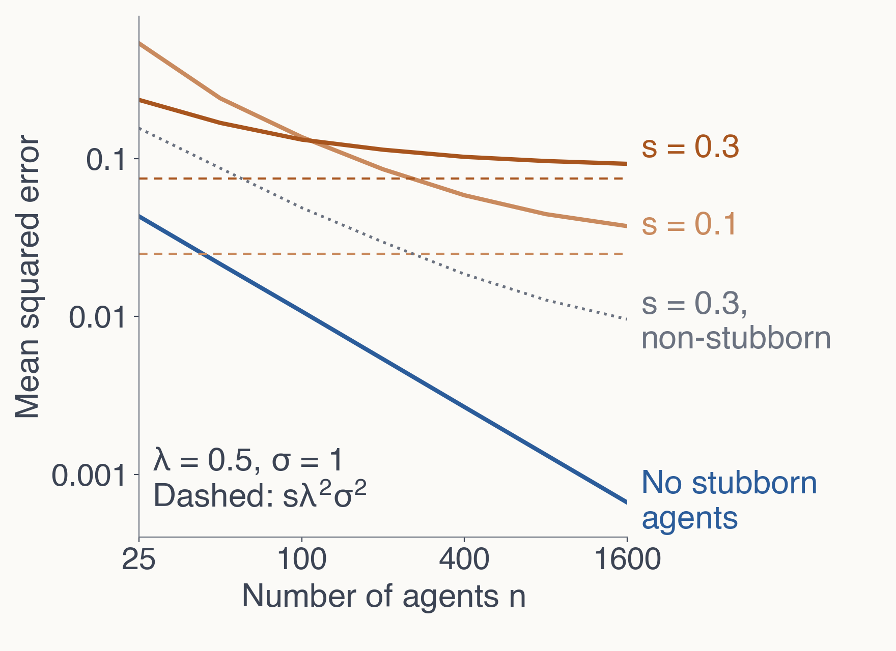
DeGroot learning on random graphs; λ = 0.5
Proved
Each stubborn agent’s error
≥ λ²σ² on every network,
so average error ≥ sλ²σ².
Conjecture
Non-stubborn error → 0
(numerically supported).
Braver: ideate and write
the paper from scratch.
Example 2 · Probe and extend a theory · 6/6
DeGroot
Each round, everyone
averages neighbors’ views.
Wise crowd
Consensus error → 0
as n grows (here ≈ 1/n).
Stubborn
Also keeps weight λ
on its own first signal.
Others average
their neighbors
λ = ½ on its own
first signal
½ on neighbors’
current views
So its belief always keeps
at least λ × its own noise.
No one else’s noise
can cancel it.
Final belief keeps ≥ ½ × its own noise,
so its error ≥ (½)²σ² = 0.25σ², at every n.
s = 0.3, λ = ½, n = 1600: average error 0.093 ≥ 0.075
Example 3 · Lecture to notes · 1/3
Recording plus board photos become notes to circulate.
Context
Lecture audio or video
Board photos, in order
[STYLE EXAMPLE] notes
notes-log.md
“Get the audio from youtu.be/7oASpaBdDMs.”
“Turn minutes 28–38 and the board into notes in my style.”
“Ask me what you need first.”
Skill
lecture-notes
House style, section
template, fidelity check
Example 3 · Lecture to notes · 2/3
Transcribe audio
↓ Boards to LaTeX
↓ Align by timestamp
↓ Draft each section
↓ Mark uncertainties
1
transcript.md and boards.md are saved once;
later steps read them.
2
One subagent per section drafts to a file.
“Draft section [N] from transcript.md and boards.md.”
3
I answer the marked questions;
the log records each answer.
Skill
pdf-to-markdown
Board photos to LaTeX via Mathpix; proofread each
Example 3 · Lecture to notes · 3/3
“Get the audio from
youtu.be/7oASpaBdDMs and turn
minutes 28–38 and the board into
notes with timestamps; mark
anything where speech and
board differ.”
Polak, Yale ECON 159 · Open Yale Courses, CC BY-NC-SA
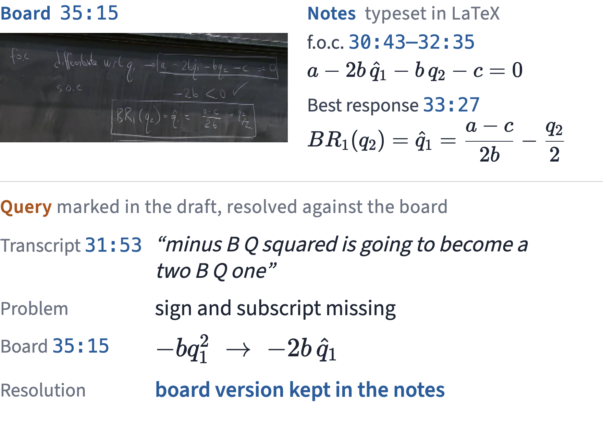
Returns to recording
have increased a lot.
Also: write slides from an
audio recording — the dream RA.
Example 4 · Better figures, then video · 1/3
An ugly table with 56 stars.
Alesina, Giuliano & Nunn (2013), Table III, cols. 1–2 of 8
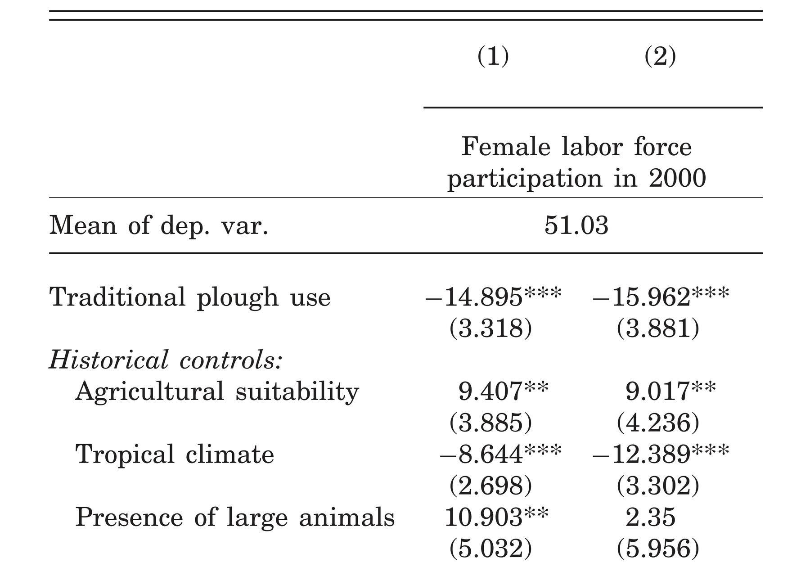
The main result
is in here somewhere.
Example 4 · Better figures, then video · 2/3
“Plot [TABLE]’s main comparison. Keep intervals, units, N.”
“Ask me what you need first.”
Ask me
↓ Read estimates
↓ Draft plot
↓ Check vs. table
↓ Revise with me
One fresh session per figure;
the plot script saved to a file.
Every point and interval matches the table’s reported digits.
Example 4 · Better figures, then video · 3/3
“Plot Table III’s main comparison
so an audience sees it at a glance.
Keep the estimates, intervals,
units and N.”
Alesina, Giuliano & Nunn (2013), Table III, redrawn
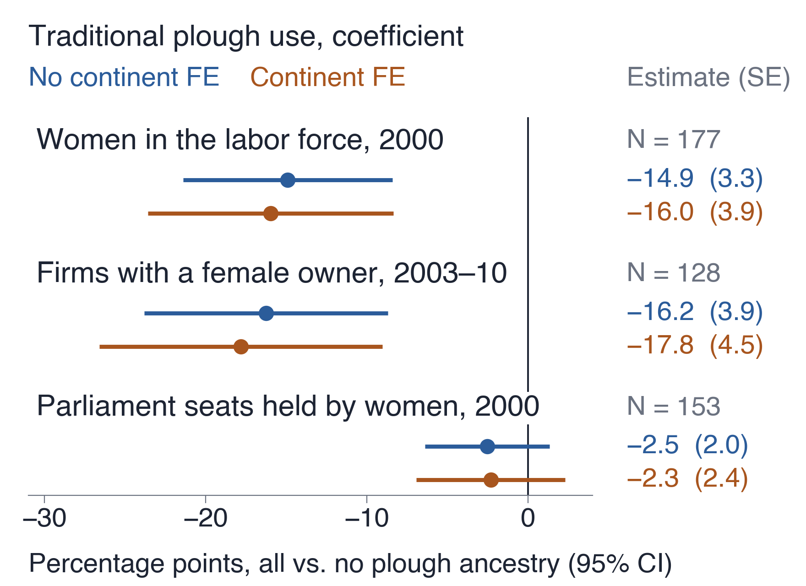
Also: slide revamp. Remix your
slides into someone else’s style,
like a musical “transposition.”
Example 4 · The video · 1/8
Bocconi talk: a six-minute film on recovering structure from noisy data.
Ask → storyboard → notes → brief and agents → voice → revisions
Me
the point, the cuts, the register, the ear.
Agents
data, stills, scenes, narration, render, checks.
Check the mathematics, then inspect
what viewers see and hear.
Example 4 · The video · Ask · 2/8
“…it’s basically a pure matrix fact, and it’s about matrices.”
“…you put it into MATLAB, and you get a bunch of eigenvectors… Most of the eigenvalues are piled up… and a few of them are really large.”
“That last stuff is what I really
want to make vivid.”
Dictated by voice.
A first film ran nine minutes.
This one: five or six minutes,
on the load-bearing idea only.
Deliverable: a storyboard
to assess and revise,
before any rendering.
Example 4 · The video · Storyboard · 3/8
Each shot
narration, cue words, and a still computed from the talk’s own model
Review page
keep, revise or cut each shot, with a note
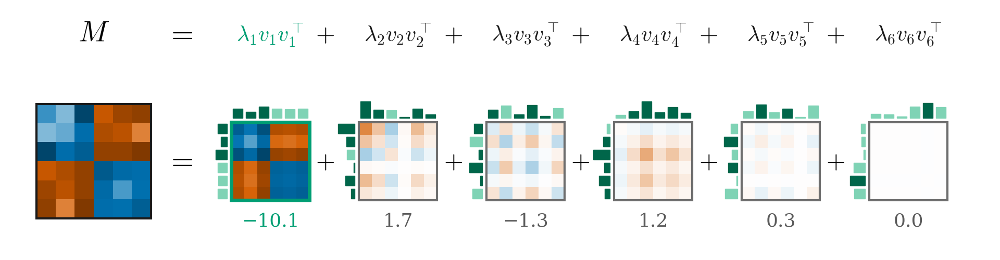
Storyboard still: the six-by-six matrix as six rank-one blocks
Example 4 · The video · Notes · 4/8
“remove ‘what you’re handed’ and make it more formal → ‘observed’”
“make the special one light up somehow”
“don’t talk through the equation here, just assert that it happens to work out this way”
“remove the jaunty language…
straight economic theory with an OCCASIONAL evocative word”
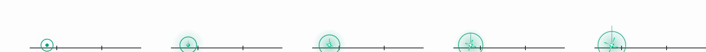
“Light up somehow,” as built: five frames
Example 4 · The video · Brief and agents · 5/8
1
The storyboard becomes data: shots, narration, cues.
2
A brief: choreography, vocabulary, every number on screen, acceptance checks.
3
Agents build scenes by chapter, render, and inspect their own frames.
Stop and ask me if
a narration line must change;
a number would differ from the model;
the sparkle reads as cheesy.
Accept only if the bell lands within one frame of the sparkle.
Example 4 · The video · Voice · 6/8
Narration
synthetic, timed to the animation word by word
Problem
“Eigen” came out wrong
Fix
auditions; respellings eyegenvector, Vile’s, Davis Kahhan
Check
every take transcribed and compared with the script
Reuse
the fix saved as a skill for every future video
I still listen to every eigen-word once:
two seconds each, in one short audio reel.
Example 4 · The video · Revisions · 7/8
First film
nine minutes, with the formal theorems
Second film
one fact about matrices, about six minutes
Revision 5
theorems to a reserve film; six-by-six example added
Revision 7
redraw the noise, then remove it
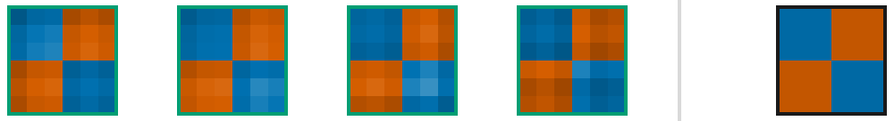
Leading block, four draws of the noise
True matrix
Every leading block stays close to the true matrix.
Example 4 · The video · Revision 7, six-by-six section · 8/8
Example 5 · An app
An agent built it from a short written spec.
You are about to use it.
Find a mistake or gap in prior work
Write an exam problem to your specs
Check a proof or analysis for errors
Restyle slides in another’s style
Replicate an analysis, setup included
Slides from an audio recording
Run a Refine report on a paper
An educational video on your paper
Write a proof or solve a model
Design evals: find where AI fails
Talk to a paper at your field’s edge
Teaching apps, e.g. today’s grouping
Messy code → replication package
A quick demo presentation
Full menu on the hub: [HUB_URL]
21
[SURVEY_URL]
22
23
Access
Every group will have a member
with significant generative AI access.
Models
Open (cheap) Chinese models with a good harness
≫ unskilled use of a $20/month plan.
Setup
Optional: set up OpenCode here, together.
[HUB_URL]
Question
What do you want to learn or produce?
Inputs
What can you provide?
Check
What would count as progress?
Report
Show the result or explain the obstacle.
Propose your project to a team; the team picks one.
Pitch each other; if collective choice is hard, randomize.
11
Whatever intimidates you about setup,
AI can give you instructions to resolve it.
24
It is an excellent technical troubleshooter.
It also solves constrained optimization problems:
“I want to get a sense of a good coding agent
but want to spend no more than 10 euros today.”
Setup guide: [HUB_URL]
Question
What do you want to learn or produce?
Inputs
What can you provide?
Check
What would count as progress?
Report
Show the result or explain the obstacle.
11
Question
What do you want to learn or produce?
Inputs
What can you provide?
Check
What would count as progress?
Report
Show the result or explain the obstacle.
11
By yourself and with your immediate collaborators,
you can do what an entire research area
would have accomplished over years.
25
Until agents act on the same terms and rights as humans,
we are the “nobility”: we decide what agents
are asked and empowered to do.
25b
You are the key input insofar as you
Direct
it where things seem in poor shape, to find mistakes
Persuade
for scarce data; coordinate complementary people
Outline
a research agenda to pursue for years, by any tools
Decide
what to learn and accomplish, by your human values
Which parts of research do you value doing?
Which outcomes do you value achieving?
26
A formerly scarce craft, which earned career credit, vanishes. They miss coming up with the unintuitive insight that works things out.
Has a big problem to solve; does not mind familiar tasks being squeezed out if that brings the solution closer.